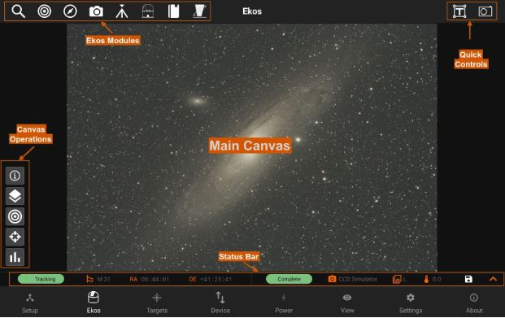
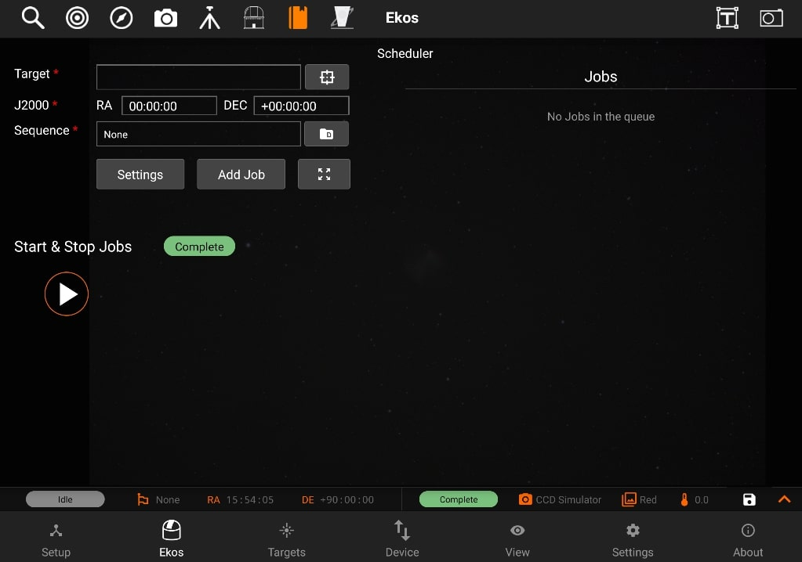
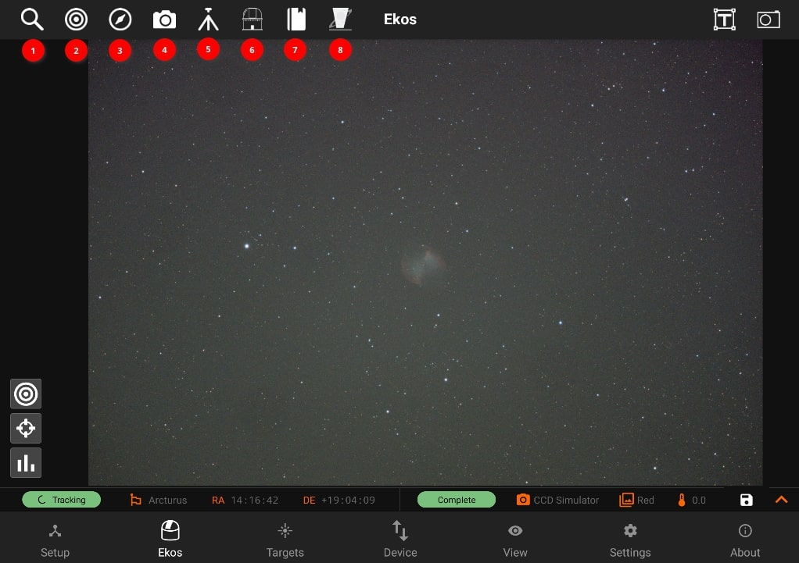
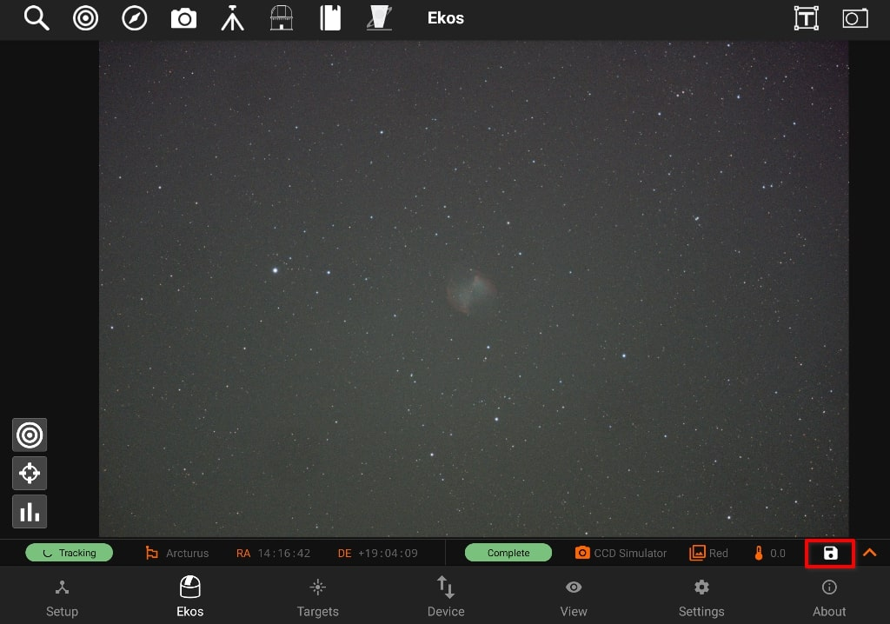

Ekos
Ekos is where all the astrophotography workflow takes place.You can control all your equipment, run sequences, and automate your workflow with the scheduler.
It is divided into different sections to facilitate access.

When an equipment profile is not started, only the Ekos Scheduler module is available for use. From the scheduler, you may select targets and sequences to create jobs. You may specify job constraints and observatory startup and shutdown procedures. Once the scheduler is running, it will select the best targets to image and would automate the rest of the workflow without any human intervention.

When an equipment profile is started, the Ekos modules become active. In the Ekos screen, you can capture images, stream video, and create image sequences. Furthermore, it provides the following facilities:
- Modules

- Focus: Focus your camera either automatically via an electronic focuser, or manually by adjusting the focus while framing, or by using Bahtinov Mask Assistant. Create presets for different configurations and set advanced settings to control the star detection and focusing algorithms.
- Align: Align your mount to get highly accurate GOTOs and to ensure you target is always in the center. You can also load an existing image to plate solve and then command the mount to go to the exact center in the sky.
- Guide: Guiding enables long-exposure astrophotography by ensuring your mount tracks accurately with time. It can automatically select and lock a guide star and send correction pulses to the mount to keep it always centered.
- Capture: create, edit, and delete presets, job sequencing, Filter Settings, Limit Settings, Calibration Settings, File Settings.
- Mount: tracking on/off, park/unpark, Meridian Flip, Limit Settings (Alt and HA Limits), and Pier Side.
- Observatory: park/unpark cap, park/unpark dome, dome goto absolute position and current angle representation.
- Scheduler: Schedule your session depending to the targets and on different timings.
- INDI Control Panel: INDI Control Panel provides an interface to interact with the drivers of the devices connected to Stellarmate.
- Quick Controls: Quick Controls are simplified quick-access settings for the camera, mount, and rotator located on the top-right panel. They can be toggled at any time. Once toggled, the corresponding control is overlayed on the top of your existing view where you can quickly and efficiently control your devices.
